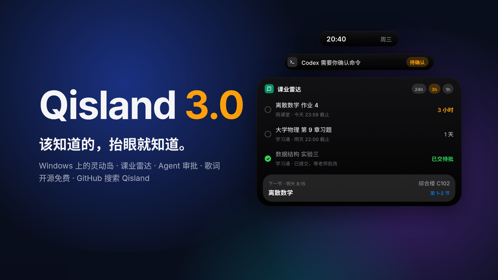

该知道的，
抬眼就知道。
下节课在哪、作业几点截止、哪条命令在等你批准、谁在用麦克风——只在需要时出现在屏幕顶上，其余时间它只是一个时钟。
把鼠标放到顶上的岛上试试 · 滚轮、方向键或右侧圆点翻页
唱到哪一句，
抬眼就看到。
系统媒体控制里的音乐和视频：封面、进度、逐行歌词。暂停、切歌，不用翻出播放器。
悬停顶上的岛，展开播放卡片。
交了的不吵，
没交的提前说。
雨课堂、学习通扫码登录，低频只读截止时间。截止前 24、3、1 小时各提醒一次，提醒完就退回时钟；导入的课表告诉你下一节在哪个教室。
命令在等你？
在岛上点头。
Codex、DeepSeek Harness 要执行命令时，岛上展开命令全文，允许或拒绝点一下就行。100 秒没点就回终端问你，从不默认同意。
上面的按钮是真的，点点看。
谁在听，
一个小点告诉你。
微信、QQ、腾讯会议、Teams、Zoom 通话时显示时长，点一下回到通话窗口。有程序开始用麦克风或摄像头时提示是谁，用着时岛旁留一个橙点或绿点。
开会前十分钟，
它先开口。
Outlook、Google、飞书、钉钉的 .ics 链接都能订阅。开始前提醒，会议链接一键加入，支持每月、每年重复。
悬停岛，看提醒卡片。
该响的响，
不该响的等你忙完。
专注计时或 Windows 专注会话期间，只放行审批、通话和快截止的作业，其余通知先收着，结束后一次汇总。
全屏时让开，
碰一下顶边就回来。
游戏和视频全屏时岛自动让开；鼠标推到顶边停一下，或按 Ctrl+Alt+Q，随时叫回，不抢焦点。
小事，也替你看着。
蓝牙耳机电量
连上、断开、电量，20% 和 10% 时提醒。
网络与校园网认证
断网、恢复、换 Wi-Fi；需要网页认证时点一下打开登录页，开着代理也认得出真实网络。
大写锁定提示
按下 Caps Lock 或 Num Lock，岛上告诉你现在的状态。
验证码一键复制
通知里的验证码单独弹出，点一下复制。只在内存里，不写日志。
点哪跳哪
点一条活动，切到对应的软件、终端会话或作业网页。
改动账本
对其他软件改过的每一处都记下来，托盘里一键还原，只删自己加的。
小组件
天气、日历、倒数日、系统状态，展开后左右翻页。
Island API
本机 127.0.0.1:9840，脚本、CI、别的工具都能往岛上推卡片。
轻，是默认值。
监听靠系统通知驱动，不轮询；只有动画在跑时才画帧。下面是作者机器（Windows 11、4K、120 Hz）上从本机 /v1/perf 读到的数。
数字只代表这一台机器。
全在本机。
没有服务器，不上传任何东西。
不读消息内容
只知道“有新消息”，不读微信消息正文。
不存密码
课程平台只用扫码登录，凭据用 Windows DPAPI 加密；只读作业，不签到、不刷课、不答题。
只读
音乐软件的播放日志只读不写；验证码和剪贴板历史只在内存里。
来去干净
本机接口只听 127.0.0.1；改过别的软件的地方都能一键还原。
看它怎么安静地工作。

约 74 秒 · 19 MB，点击后才开始加载。
该知道的，
抬眼就知道。
需要 Windows 10 或 11 和 .NET 8 桌面运行时。下载、解压、运行 Qisland.exe。开源免费。